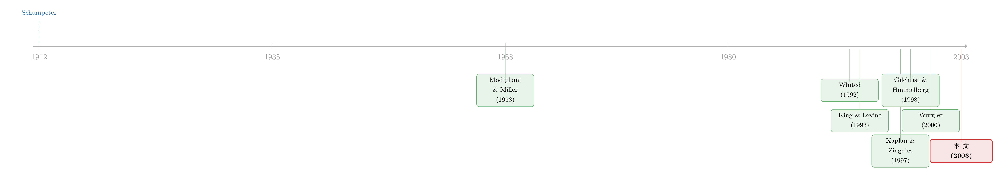

「借不到钱」如何拖慢一个国家——把融资约束从投资的欧拉方程里解出来
本文读的是 Love (2003, Review of Financial Studies)：作者把企业投资的欧拉方程 (Euler equation) 当成一把尺子，从跨国的微观数据里量出「融资约束」的大小，并发现——在金融发展水平低的国家，金融因素对企业跨期投资决策的扭曲，大约是金融发展处于平均水平国家的两倍。这为「金融发展促进增长」这个宏观命题，补上了一个干净的微观地基。
1 一个老问题，和它绕不开的死结
金融到底重不重要？这是一个古老到几乎成了陈词滥调的问题。早在 1912 年，Schumpeter 就认为运转良好的金融体系能催生增长；可后来的几十年里，质疑声从未断过——Lucas (1988) 干脆把金融对增长的作用斥为被严重夸大了。直到 King and Levine (1993) 用跨国数据跑出一条相关性：金融越发达，增长越快。这条相关性此后被反复验证，几乎成了发展经济学的「定理」。
但凡是做实证的人，看到「跨国相关性」四个字，心里都会立刻警觉。金融发达的国家，往往也法治更健全、产权更清晰、人力资本更厚——你怎么知道，是金融本身在推动增长，而不是这些「一起出现」的东西在推动？
更要命的是机制问题。就算我们相信金融真的有用，它究竟通过什么渠道起作用？宏观回归告诉你「金融和增长正相关」，却没法告诉你那台发动机内部是怎么转的。于是，一个自然的问题是：能不能下沉到企业层面，把这台发动机拆开看？
这正是本文的野心所在。作者押注的那条机制是：金融发展之所以促进增长，是因为它松开了企业的「融资约束」（financing constraints），让有好项目的公司能更顺畅地拿到外部资金，从而改善了资本在全社会的配置效率。
2 微观这条线，同样卡在一个死结上
把视线移到企业层面，故事并没有变简单。
自 Modigliani and Miller (1958) 证明「完美资本市场下融资与实体决策无关」之后，后来的人不断给这个命题打补丁：信息不对称、代理问题，使得内部融资与外部融资的成本出现了楔子，于是企业的财务状况开始影响它的投资（综述见 Hubbard, 1998）。
可怎么测量这种约束，一直是个老大难。早年最流行的做法是「投资—现金流敏感性」：看企业投资对自身现金流有多敏感，越敏感就说它越受约束。但 Kaplan and Zingales (1997) 一篇文章几乎把这条路掀翻了——他们指出，最不受约束的公司，敏感性反而可能最高。敏感性到底度量了约束，还是度量了投资机会？没人说得清。（关于「投资—现金流敏感性」这把尺子为什么靠不住、约束又该如何重新定义，可参见《同样是「借不到钱」，原因却各不相同：把融资约束拆回它的三个源头》。）
另一条路是 Q 理论。但 Q 理论的命门在于那个不可观测的边际 q，通常用「资产市值/账面值」来代理。问题来了：市值与管理者估值之间的偏离，本身就跟市场不完美程度有关——也就是说，这个代理变量的测量误差，会系统性地和金融发展水平相关。在跨国比较里，这等于在你最想干净的那个维度上引入了最脏的偏误。Q 模型，从一开始就出局了。
这是全文识别策略的隐藏前提：在「跨国 × 金融发展」这个设定里，任何与金融发展相关的测量误差都是致命的。这也解释了作者为什么宁可走更迂回、假设更强的结构化道路。
于是，真正关键的一步出现了：作者转向投资的欧拉方程。同一个动态优化问题，Q 模型和欧拉方程只是把一阶条件「重新排列」的两种方式；但欧拉方程估计所需的假设更弱，最妙的是，它显式地控制了未来的投资机会，无需再去寻找那个棘手的 q 代理。
3 模型：把「约束」藏进随机贴现因子
这是一篇结构模型论文，所以我们必须把发动机一层层拆开。模型沿用 Gilchrist and Himmelberg (1998) 的设定，为简化忽略债务融资（作者论证这不影响投资的一阶条件）。
设定。 股东（或经理）最大化企业价值，即未来股利的期望贴现和：
$$ V(K_t,\xi_t)=\max_{\{I_{t+s}\}}\; D_t+E_t\!\left[\sum_{s=1}^{\infty}\beta_{t+s-1}\,D_{t+s}\right] $$
约束有三条。其一是「来源等于用途」的股利定义式：
$$ D_t=\Pi(K_t,\xi_t)-C(I_t,K_t)-I_t $$
其二是资本积累方程，\(\delta\) 为折旧率：
$$ K_{t+1}=(1-\delta)K_t+I_t $$
其三，也是引入金融摩擦的关键一笔——股利非负约束：
$$ D_t\ge 0 $$
这里 \(\Pi(\cdot)\) 是（已对可变成本最大化过的）受限利润函数，\(\xi_t\) 是生产率冲击，\(C(I_t,K_t)\) 是投资的调整成本。摩擦就藏在 \(D_t\ge 0\) 这条不等式里：它的拉格朗日乘子记为 \(\lambda_t\)。\(\lambda_t\) 等于企业增发新股所需承担的影子成本——一旦企业想发负股利（即增发股权）来融资，这条约束就会绷紧，而绷紧的程度正是外部融资比内部融资贵出来的那一块，根源是信息或契约成本。
推导欧拉方程。 对上述问题的一阶条件重新排列（作者把详细推导留作备索），得到投资的欧拉方程：
这个方程的直觉，其实非常朴素：左边是今天投资的边际成本，右边是把这笔投资推迟到明天的边际成本（贴现后）。 最优时两者相等。右边那一项里，除了明天的 MPK 和调整成本，还多乘了一个 \(\Theta_{t+1}\)——这就是融资约束的全部秘密所在。
约束如何扭曲投资。 企业的有效贴现因子，是内部贴现因子 \(\beta_t\) 与外部融资溢价因子 \(\Theta_t\) 的乘积。如果企业此刻受约束（想增发却受阻），今天这笔资金的影子价值就相对明天上升，即 \(\lambda_t>\lambda_{t+1}\)。由于 \(\Theta_t\) 随这个影子值负向变动，企业的有效贴现因子下降，于是它会把投资从今天推迟到明天。一句话：金融摩擦让企业「明天投、别今天投」，扭曲的正是投资的跨期配置。
在完美资本市场里，\(\lambda_t=\lambda_{t+1}=0\)，从而 \(\Theta_t=1\)，企业永远不受约束——欧拉方程退回标准形式。
把不可观测的 \(\Theta_t\) 参数化。 模型本身不给 \(\Theta_t\) 一个公式。作者的办法（沿袭 Whited, 1992 的「特设」思路）是，把它写成流动资产存量的线性函数。具体地，用现金与有价证券除以总资产（下称 cash stock）来代理企业的财务松弛度——这一点在 Myers and Majluf (1984) 模型里有理论支撑，那里现金被称为「财务松弛」（financial slack），它让企业在信息不对称下也能拿下正 NPV 项目。基准形式为 \(\Theta_{it}=a_{0i}+a_1\,Cash_{it-1}\)，其中 \(a_{0i}\) 是企业特定的约束水平，被吸收进企业固定效应。
而本文真正的主张，浓缩在下面这个交互项里：
$$ \Theta_{it}=a_{0i}+\left(a_1+a_2\,FD_c\right)Cash_{it-1} $$
\(FD_c\) 是国家层面的金融发展（financial development）指数。焦点是系数 \(a_2\)：金融越发达，现金对随机贴现因子的影响就越弱，约束就越松，因此理论预期 \(a_2<0\)。
注意这里一个微妙的取舍：这种参数化不允许一个显式的误差项。这是个强假设。作者把宝押在过度识别检验（Sargan 检验）上——如果检验没有拒绝，就说明被省略的误差项在经验上无足轻重。这把「模型够不够格」的判决权，交给了数据。
4 从结构参数到一条可估的回归
把 MPK 与调整成本的表达式代回欧拉方程，会得到一个高度非线性、塞满企业特定参数的式子。作者沿 Gilchrist and Himmelberg (1998) 的做法做一阶泰勒线性化，把这些参数统统塞进固定效应，并用「理性预期 = 实现值 + 误差」替换期望，最终得到可估的经验模型：
$$ \frac{I}{K}_{it}=\beta_1\frac{I}{K}_{i,t+1}+\beta_2\frac{I}{K}_{i,t-1}+\beta_3\frac{S}{K}_{it}+\beta_4\,Cash_{it-1}+\beta_5\,Cash_{it-1}\,FD_c+f_i+d_{c,t}+e_{it} $$
其中 \(f_i\) 是企业固定效应，\(d_{c,t}\) 是国家—时间虚拟变量（吸收各国各自不同的利率与宏观冲击）。结构参数与回归系数的对应关系为
$$ \beta_4=\frac{\bar\beta\gamma}{\alpha d}\,a_1,\qquad \beta_5=\frac{\bar\beta\gamma}{\alpha d}\,a_2,\qquad d=1+\bar\beta(1-\delta)g $$
于是本文的核心假设，被干净利落地翻译成对两个回归系数的符号检验：
$$ \beta_4>0\quad\text{and}\quad\beta_5<0 $$
前者说融资约束确实非零（至少在某些国家如此），后者说约束随金融发展而递减。整篇论文的成败，就压在 \(\beta_5\) 这个交互项的符号与显著性上。
5 识别与估计：藏在计量细节里的诚实
结构模型最容易被诟病「假设太多」，所以作者在估计环节格外小心，这部分值得专门一说。
固定效应怎么去。 由于回归里含有前置变量（如 \(I/K_{i,t+1}\)），普通的组内去均值会产生偏误。作者改用 Arellano and Bover (1995) 的前向均值差分（forward mean differencing，又称「正交偏差」），它只减去未来观测的均值，从而保持变换后误差与原始（未变换）工具变量之间的正交性。国家—时间虚拟 \(d_{c,t}\) 则通过国家—时间差分预先剔除。
工具变量与正交条件。 理性预期误差 \(e_{it}\) 与投资决策做出时（假定为年初）的任何信息正交，故正交条件为 \(E[e_t\mid x_{t-s}]=0,\ s>1\)。作者用 GMM 加最优权重矩阵估计，工具取各变量的 \(t-1\)、\(t-2\) 滞后，外加现金流、销货成本、行业虚拟，以及 cash、sales、investment 与 \(FD\) 的交互。
样本失衡怎么办。 这是个非常不平衡的面板，欠发达国家被严重低估，观测少的国家会对交互项贡献过小的影响力。作者用两招纠偏：一是基于排名的回归，每国只取按固定资本规模排名最大的若干家公司（分别报告 25、50、150 家的结果）；二是加权回归，给每国赋一个等于该国观测数倒数的权重，从而把各国观测数拉平——后者用上了全部样本，是作者更偏好的方法。
模型够不够格。 用 Sargan J 统计量做过度识别检验。作者也诚实地点出两条 caveat：其一，该统计量的渐近分布对有限样本是糟糕的近似（Hall and Horowitz, 1996）；为此他借了 Matz Dahlberg 的 GMM 自助法（bootstrap）代码来求临界值。
6 结果：「两倍」这个数字
那么，发动机拆完，数字落地了吗？
落地了。核心系数 \(\beta_5\) 符号为负，与「金融发展松绑约束」的假设一致；现金对随机贴现因子的影响，在金融发展低的国家显著更强。把估计出来的结构参数代回去，作者得到了那个最便于记忆的量级结论：
金融因素对投资跨期配置的扭曲（用「资本成本的变化幅度」来度量），在一个金融发展处于低位的国家，大约是金融发展处于平均水平国家的两倍。
作者也老实地把这个数字的「脆弱点」摊开。在脚注的敏感性分析里，唯一会显著影响结论的参数是 \(\theta\)（与资本份额、加成有关）：若取 \(\theta=0.1\)，则平均发展国家的资本成本变化约 5%、低发展国家约 9%；若取 \(\theta=0.3\)，则分别约为 17% 与 34%。无论怎么取，「低发展国家约为平均水平国家两倍」这个比例始终稳健——绝对水平在变，比例不变。考虑到投资文献向来不以精确著称（Whited, 1998 引用的调整成本估计跨度高达 8000%），这个稳健性已属难得。
此外还有一个符合直觉的发现：小企业在欠发达国家受到的相对劣势更大——它们的金融因素对随机贴现因子的影响更强。这与「金融发展更利于小企业」的一系列研究（如 Laeven, 2003 关于金融自由化的证据）相互呼应。
7 文献脉络
把这条线捋一遍，本文的位置就清楚了。
最上游是两条平行的大河。一条是金融与增长：从 Schumpeter (1912) 的猜想，到 King and Levine (1993) 用跨国数据把相关性钉下来，再到 Rajan and Zingales (1998) 用「行业对外部融资的依赖度」做出更接近因果的设计，Wurgler (2000) 则直接去看金融发展是否改善了资本配置。另一条是融资约束的微观实证：从 Modigliani and Miller (1958) 的无关性定理出发，经 Whited (1992) 把欧拉方程引入约束度量，到 Kaplan and Zingales (1997) 对「投资—现金流敏感性」的釜底抽薪。

本文站在这两条河的交汇处。它接过 Gilchrist and Himmelberg (1998) 的结构化欧拉方程工具——后者本是为单国（美国）数据打造——把它搬到跨国设定里，让 \(FD\) 与 cash 的交互项承载「金融发展松绑约束」这一全新假设。相比 Rajan-Zingales、Wurgler 等前作，本文最大的方法论改进在于：结构模型显式控制了企业未来的增长机会，从而绕开了「哪些企业本就该增长」这个识别难题。它给「金融发展→增长」这条宏观链条，补上了一段「金融发展→松绑约束→改善配置」的微观因果。
8 评论与延伸（Q&A + 研究方向）
(a) 几个可能的疑问
Q：为什么不直接用更简单的「投资—现金流敏感性」，非要搬出欧拉方程？
因为那把尺子在跨国设定里同时坏在两头。Kaplan-Zingales (1997) 已证明敏感性未必单调对应约束；更要命的是它无法干净地控制投资机会，而欧拉方程通过 MPK 与跨期一阶条件显式地控制了未来增长机会。代价是假设更强、估计更复杂——这是一次「拿透明度换可信度」的交易。
Q：把约束写成「现金的线性函数、且没有误差项」，这假设是不是太强了？
确实强，作者自己也承认。但他没有用嘴辩护，而是把判决权交给过度识别（Sargan）检验：若被省略的误差项在经验上重要，模型会被拒绝。检验未拒绝，就当作这个强假设「够用」。这是结构实证里常见的、也是诚实的做法——但它终究是一种「没被证伪」，不是「被证实」。
Q：\(FD\) 是国家层面、且不随时间变化的，会不会只是在捕捉「法治」「产权」这些一起出现的东西？
这是最实质的担忧。\(FD\) 不随时间变，其主效应被企业固定效应吸收，识别完全来自交互项 \(Cash\times FD\) 的斜率差异。但任何与 \(FD\) 高度共线的国家特征（法律体系、投资者保护），都可能同样地调节现金的作用。作者在第 5 节专门检验了法律环境等替代解释，但「金融发展」与「制度质量」在跨国数据里本就难以彻底分离。
Q：「资本成本变化是两倍」——这个两倍，是绝对水平还是相对幅度？可靠吗？
是相对幅度。绝对水平对结构参数 \(\theta\) 高度敏感（5%/9% 到 17%/34% 不等），但「低发展国 ÷ 平均发展国 ≈ 2」这个比例在各种取值下稳健。所以正确的读法是：别太当真那个绝对百分比，要当真的是那个比例。
Q：样本里欠发达国家那么少，结论会不会被几个大国「绑架」？
这正是作者用排名回归（每国取前 25/50/150 家）和观测数倒数加权回归来防的。两种纠偏都指向同一结论，可信度因此提高。但根子上，欠发达国家的微观数据稀薄，是这类跨国结构研究绕不开的硬约束。
Q：这篇 2003 年的文章，对今天研究信用市场的人还有什么用？
它的真正遗产是方法论模板：当你想度量一种不可观测的「楔子」（约束、溢价、摩擦），又担心代理变量与你的解释变量内生相关时，把它参数化进一阶条件、用过度识别检验来背书，是一条可复制的路。 这套思路后来被反复用于流动性、信用利差、外资持有等领域。
(b) 几个可能的研究问题与提案
1. 把「约束的楔子」从股权搬到公司债市场。 【经济故事】本文的 \(\Theta_t\) 度量的是股权融资溢价。但在以债务融资为主的经济里，真正绷紧的是「债务的影子价值」——作者在脚注里也承认两者在欧拉方程里效果同构。若用公司债二级市场价差作为约束代理，重估 \(FD\times\) 约束的交互，会更贴近信用市场现实。 【可行性】中。需要跨国公司债成交/报价数据（TRACE 仅限美国，跨国需 Markit/Refinitiv），识别上仍受「\(FD\) 与制度共线」困扰，但债务侧的约束度量比现金存量更直接。
2. 用一次外资开放冲击，给 \(FD\) 制造时间变异。 【经济故事】本文最大的软肋是 \(FD\) 不随时间变。若借助某国一次清晰的股权/债市对外开放，把「外资进入」当作金融发展的外生提升，就能在企业层面做事件研究式的欧拉方程估计，看约束是否随之松绑。 【可行性】高。开放事件有明确时点，可做交错 DiD（注意 Bekaert-Harvey-Lundblad 一系的设计）。这条路与《外资真是「蝗虫」吗？——一次跨 30 国的长期投资体检》的问题意识天然相通。
3. 约束在「好年景」还是「坏年景」更咬人？ 【经济故事】本文的 \(d_{c,t}\) 把商业周期当噪声吸收掉了，但约束本身可能是顺周期或逆周期的。把周期状态与 \(Cash\) 再交互，能看金融发展的「松绑」效应是否在衰退里被放大。 【可行性】中。数据现成（同一面板加宏观状态变量），识别上要小心周期与 \(FD\) 的混淆。这与《融资约束，为什么偏偏在好年景里更咬人？》是同一类张力。
4. 用机器学习替代「现金的线性参数化」。 【经济故事】本文把 \(\Theta_t\) 强行写成现金的线性函数，是为了可估而牺牲了灵活性。若用半参数/ML 方法在保持欧拉方程矩条件的前提下估计 \(\Theta_t\) 的形状，能检验线性假设到底丢了多少信息。 【可行性】中偏低。把 ML 嵌进 GMM 矩条件并保证识别，技术门槛不低，但近年「ML × 结构估计」的工具已渐成熟。
参考文献
Arellano, M., and O. Bover (1995). Another Look at the Instrumental Variable Estimation of Error Component Models. Journal of Econometrics 68, 29–51.
Gilchrist, S., and C. Himmelberg (1998). Investment, Fundamentals and Finance. NBER Macroeconomics Annual, MIT Press.
Hall, P., and J. Horowitz (1996). Bootstrap Critical Values for Tests Based on Generalized Method-of-Moments Estimators. Econometrica 64, 891–916.
Hubbard, R. G. (1998). Capital Market Imperfections and Investment. Journal of Economic Literature 36, 193–225.
Kaplan, S., and L. Zingales (1997). Do Investment-Cash Flow Sensitivities Provide Useful Measures of Financing Constraints? Quarterly Journal of Economics 112, 169–215.
King, R. G., and R. Levine (1993). Finance and Growth: Schumpeter Might be Right. Quarterly Journal of Economics 108, 717–737.
Love, I. (2003). Financial Development and Financing Constraints: International Evidence from the Structural Investment Model. Review of Financial Studies 16(3), 765–791.
Lucas, R. E. (1988). On the Mechanics of Economic Development. Journal of Monetary Economics 22, 3–42.
Modigliani, F., and M. Miller (1958). The Cost of Capital, Corporate Finance, and the Theory of Investment. American Economic Review 48, 261–297.
Myers, S., and N. Majluf (1984). Corporate Financing and Investment Decisions When Firms Have Information That Investors do not Have. Journal of Financial Economics 13, 187–221.
Rajan, R., and L. Zingales (1998). Financial Dependence and Growth. American Economic Review 88, 559–586.
Whited, T. (1992). Debt, Liquidity Constraints, and Corporate Investment: Evidence from Panel Data. Journal of Finance 47, 1425–1460.
Whited, T. (1998). Why do Investment Euler Equations Fail? Journal of Business and Economic Statistics 16, 479–488.
Wurgler, J. (2000). Financial Markets and Allocation of Capital. Journal of Financial Economics 58, 187–214.